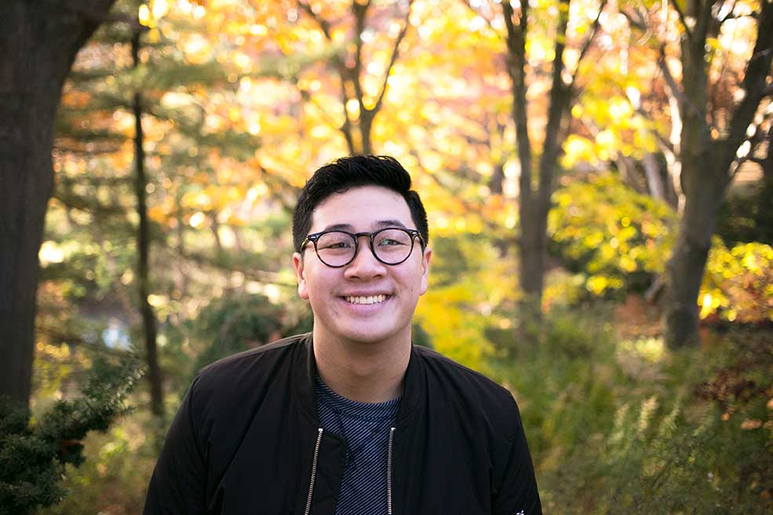

I'm currently a Designer in the Creative Studio at FORREC Ltd.
I research, ideate, design, and create storytelling interventions that aim to send people on adventures between the physical and digital world, and foster meaningful human connections. I create experiences that ignite play  , curiosity
, curiosity  , and happiness
, and happiness  . At FORREC, my work currently has a focus on theme parks, museums, and other entertainment-related spaces.
. At FORREC, my work currently has a focus on theme parks, museums, and other entertainment-related spaces.
I'm also a big fan of youth-engagement & innovation, photography, and epic grilled cheese sandwiches.